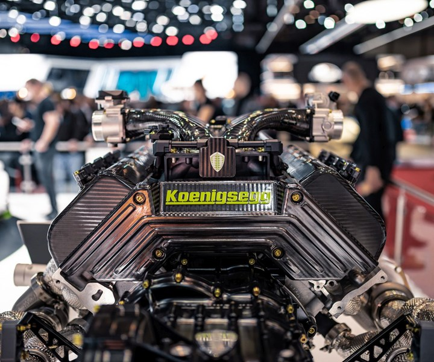
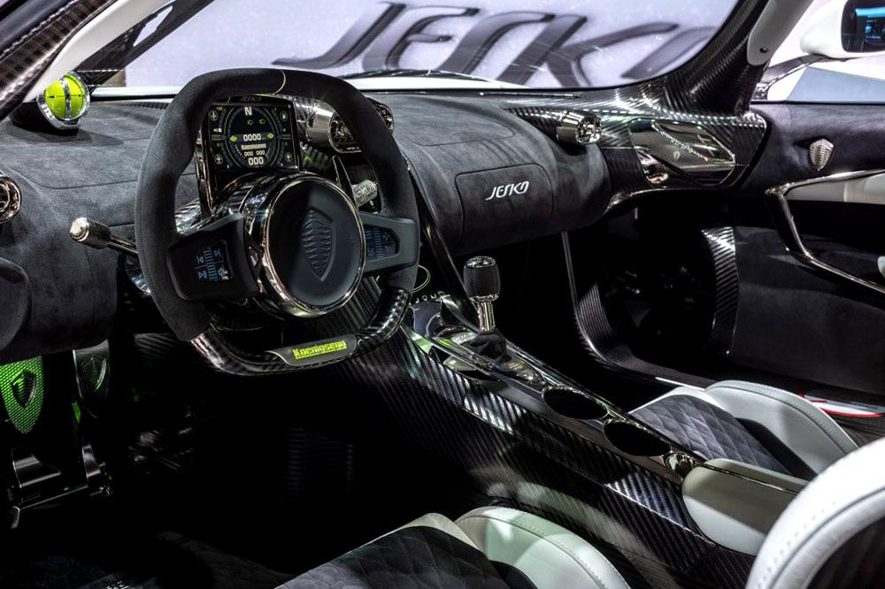

The Koenigsegg Jesko is a limited production mid-engine sports car produced by the Swedish automobile manufacturer Koenigsegg. The car was introduced at the 2019 Geneva Motor Show and was completely sold out before the show ended. Succeeding the Agera, the Jesko is named as a tribute to the company founder's father, Jesko von Koenigsegg. There are two variations of the car – "Absolut" (top speed) and "Attack" (track-focused).
The engine is a development of the 5.1 L (5,065 cc) twin-turbocharged V8 engine used in the Agera. It has four valves per cylinder each with a bore and stroke of 92 mm × 95.25 mm (3.62 by 3.75 inches) and a compression ratio of 8.6:1. The engine has a power output of 1,280 hp (1,298 PS; 954 kW) at 7,800 rpm and 1,000 N⋅m (738 lb⋅ft) of torque at 2,700 to 6,170 rpm on normal petrol and has a power output of 1,600 hp (1,622 PS; 1,193 kW) and 1,500 N⋅m (1,106 lb⋅ft) of torque at 5,100 rpm on E85 biofuel.
The use of a redesigned monocoque improves leg and headroom in the interior of the Jesko when compared to previous Koenigsegg models. Though weight saving is a priority for interior features, the car is still equipped with amenities such as a climate control system, an infotainment system with a 9.0-inch screen, Apple CarPlay and USB phone charging. The car has unique screens mounted in the steering wheel spokes and a 5.0-inch screen mounted behind the steering wheel displaying vital information to the driver. The seats will be made from hollow carbon fibre but will be electrically adjustable.
The Jesko shares Koenigsegg's 'Autoskin' capabilities from the Regera, allowing for remote operation of doors and the hood. It is also possible to hydraulically lift the front and rear axles of the car to give additional ground clearance. The doors have been redesigned so that they open further outward and have more ground clearance while open. The roof has screws in order to ensure it remains in place during high speed driving.
indepth video about Koenigsegg Jesko